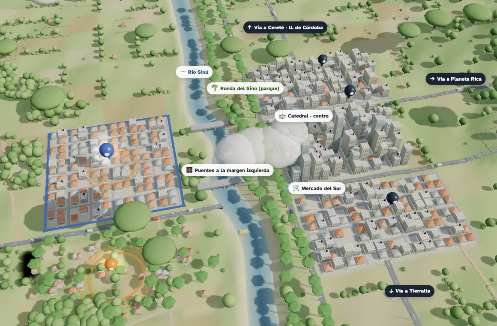

Maqueta 3D de Montería

Toque una zona para acercarla. Arrastre a lo ancho para girar; pellizque o use + y − para acercar.
Arrastre para girar; pellizque para acercar.
Zonas golpeadas por las lluvias de febrero de 2026
Barrios al otro lado del río, más bajos que el Sinú cuando crece. El 8 de febrero de 2026 hubo evacuaciones en 13 barrios, entre ellos El Tambo, El Rosario y El Campano.
Dato real · El Heraldo, 8 de febrero de 2026
Corregimientos y veredas, con fincas y potreros. El 1 de febrero de 2026, Loma Verde, Las Palomas, Santa Lucía y Leticia estuvieron en emergencia por inundaciones.
Dato real · El Heraldo, 1 de febrero de 2026
El comercio, las oficinas y los edificios más altos, alrededor de la Catedral, en la orilla alta del río.
Barrios de la orilla alta, hacia la salida a Cereté.
Barrios de la orilla alta, alrededor del Mercado del Sur.
Este navegador no puede mostrar la maqueta en 3D: queda la imagen.
Montería en 3D: así se lee el territorio en el plan Personalizado. Maqueta ilustrativa, no a escala. Maqueta: Sara Patiño Rojas, CivisLab.